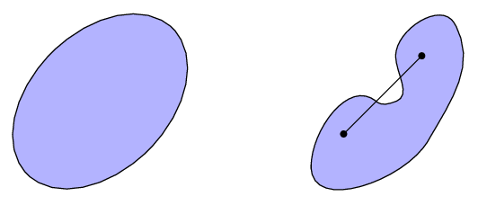
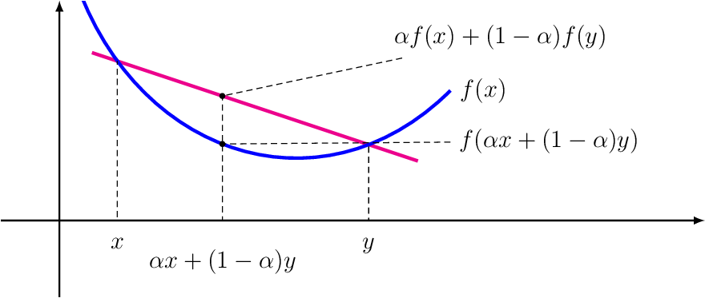
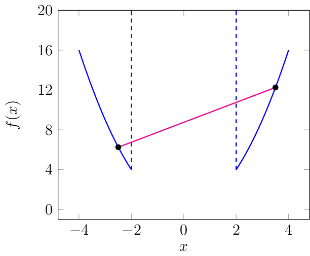
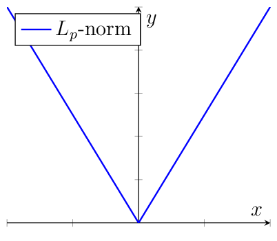
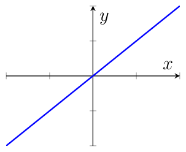

Convex Optimization#
Convex optimization represents a somewhat ideal scenario in optimization problems. With a convex objective, there is only one minimum to find, simplifying the task. Many optimization problems in machine learning are convex, or at least convex in certain coordinates when others are fixed. Knowing whether an objective is convex is valuable for understanding how to improve a model. If a model derived from minimizing the objective function performs poorly on other metrics, this may indicate that the objective does not fully capture what defines a good model. To establish convex optimization objectives, we first define convex sets and convex functions.
Definition 10 (Convex set)
A set \(\mathcal{X}\subseteq \mathbb{R}^d\) is convex if and only if the line segment between every pair of points in the set is in the set. That is, if for all \(x,y\in \mathcal{X}\) and \(\alpha\in[0,1]\) we have
The definition states that in a convex set you can connect any two dots within the set and you will never leave the set when drawing that connecting line. The set on the left is convex, and the set on the right is not convex.

Definition 11 (Convex function)
A function \(f:\mathbb{R}^d\rightarrow\mathbb{R}\) is convex if and only if for every \(\alpha \in[0,1]\), and \(\vvec{x},\vvec{y}\in\mathbb{R}^d\):
A convex function is a function whose graph is always below the line that connects two dots on the graph. Below you see an illustration of that property.

A convex optimization problem, or objective, is now characterized by two things: a convex objective function and a convex feasible set.
Definition 12 (Convex optimization problem)
Given a convex objective function \(f:\mathbb{R}^d\rightarrow \mathbb{R}\) and a convex feasible set \(\mathcal{C}\subseteq\mathbb{R}^d\) then the objective of a convex optimization problem can be written in the following form:
The fact that not only the objective function, but also the feasible set has to be convex might come here as a surprise. This is more easily understood if you transform the constrained optimization problem into an unconstrained one. By using the indicator function
Since the objective function above returns infinity for any \(\vvec{x}\) outside of the feasible set, any potential minimizer has to be feasible. If we now apply the definition of a convex function, then we require that the graph of the function is below the connecting line. However, if we have a nonconvex feasible set, then there exist two points in the feasible set whose connecting line is partially outside of the feasible set. On this part, where the connecting line is outside of the feasible set, the objective function returns infinity. Hence, the graph of the objective will not be under the connecting line. The example below illustrates this property further.
Example 6
The figure below displays the function \(f(x)=x^2 + \mathbb{1}_{\{\lvert x\rvert\geq 2\}}\). The feasible set \(\{\lvert x\rvert\geq 2\}\) is nonconvex, since the line connecting \(x_1=-2.5\) and \(x_2=3.5\) leaves the feasible set. We indicate domain where the function is returning infinity by the dashed vertical lines. If we now connect two function values as indicated by the red line, then the graph is above the line within the interval \([-2,2]\). This shows that the function \(f\), indicating an optimization objective with a convex objective function and a nonconvex feasible set is not a convex function.

Theorem 4
If a function \(f:\mathbb{R}^d\rightarrow\mathbb{R}\) is convex, then every local minimizer \(x^*\) of \(f\) is a global minimizer.
Proof. Assume that a convex function \(f\) has a local minimizer \(x_{loc}\) which is not a global minimizer: \(f(x_{loc})>f(x^*)\). Then going towards \(x^*\) from \(x_{loc}\) minimizes the function value, because the graph is below the connecting line from \(x_{loc}\) to \(x^*\). More formally, we have for any \(\alpha<1\):
where the first inequality stems from the definition of convex functions, and the second inequality from the fact that \(f(x_{loc})>f(x^*)\). As a result, we can find in any neighborhood of \(x_{loc}\) a point \(v = \alpha x_{loc} + (1-\alpha)x^*\), by choosing \(\alpha\) close enough to one, such that \(f(v)<f(x_{loc})\). Hence \(x_{loc}\) is not a local minimizer.
Since we can state any (constrained) optimization objective as an unconstrained objective by means of the indicator function as discussed above, we can apply Theorem 4 also to constrained optimization objectives and deduce that any local minimizer of a constrained objective is also a global one.
Conversely, not every function with one global minimum has to be convex. An example of a nonconvex function that has just one local, and therewith also global minimum is the Rosenbrock function.
Convex objectives also often enable the minimization of the dual, as the following theorem shows.
Theorem 5 (Slater’s Condition)
Strong duality holds for any convex constrained objective function of the form
having a point in the interior of the feasible set (not just on the boundary). That is, if the following set is not empty:
Slater’s condition says that the saddle point of the Langrangian, that is the optimizer of the dual objective, solves the primal objective. The condition that the interior of the feasible set should not be empty is satisfied in most cases.
Properties of Convex Functions#
We can show that a function is convex by applying the definition. However, in practice it’s useful to rely on a couple of properties that allow to quickly assess whether a function is convex. First of all, there are some very basic convex functions, like affine functions and norms.
Lemma 1
Every norm \(\lVert\cdot\rVert:\mathbb{R}^d\rightarrow \mathbb{R}_+\) is a convex function.
Proof. For any \(\vvec{x},\vvec{y}\in\mathbb{R}^d\) and \(\alpha\in[0,1]\) we have:
The plot below shows the graphs of the \(L_p\) norm, which looks the same for \(x\in\mathbb{R}\), regardless of \(p\) because \(\lVert x\rVert = \sqrt[p]{\lvert x\rvert^p} = \lvert x\rvert\). We can clearly observe the typical convex function shape.

Lemma 2
The squared \(L_2\)-norm \(f:\mathbb{R}^d\rightarrow \mathbb{R}\), \(f(\vvec{x})=\lVert\vvec{x}\rVert^2\) is convex.
Proof. Let \(\vvec{x}_1,\vvec{x}_2\in\mathbb{R}^d\) and \(\alpha\in[0,1]\). Then we have to show that
We apply the binomial formula for the squared \(L_2\)-norm, which derives directly from the definition of the squared \(L_2\)-norm by an inner product (see linear algebra lecture). Then we have:
where the last equation derives from the fact that the squared absolute value of a real value is equal to the squared real value.
What is standing above, is not yet what we want, and it is difficult to see which step has to be taken next to derive the Inequality (2). Hence, we apply a trick. Instead of showing that Inequality (2) holds as it stands, we show that an equivalent inequality holds:
We substitute now the result of Eq. (3) into the term on the left of the inequality above:
This concludes what we wanted to show.
Lemma 3
Every linear function \(f:\mathbb{R}^d\rightarrow\mathbb{R}\) is convex and concave (that is -\(f\) is convex).
Proof. Linear functions mapping to real values are parametrized by a matrix (more specifically a row vector in this case) \(A\in\mathbb{R}^{1\times d}\), having the form \(f(\vvec{x})=A\vvec{x}\). This type of function is further characterized by the property that for any \(\vvec{x},\vvec{y}\in\mathbb{R}^d\) and \(\alpha\in[0,1]\) we have:
The equation above satisfies the inequality defining convex functions. This equality also applies to \(-f\), hence showing that \(f\) is also concave.
The plot below shows the graph of a linear function. We can see how this is a special case, since any line connecting two function values lie exactly on the graph.

Further, there are some specific compositions of functions that result in convex functions.
Lemma 4
Nonnegative weighted sums of convex functions are convex:
for all \(\lambda_1,\ldots,\lambda_k\geq 0\) and convex functions \(f_1,\ldots,f_k\) the function
Proof. Exercise
Lemma 5
If \(g:\mathbb{R}^d\rightarrow \mathbb{R}^k\) is an affine map (that is, \(g\) has the form \(g(\vvec{x})=A\vvec{x}+\vvec{b}\) for a matrix \(A\) and vector \(\vvec{b}\)), and \(f:\mathbb{R}^k\rightarrow \mathbb{R}\) is a convex function, then the composition
Proof. Exercise